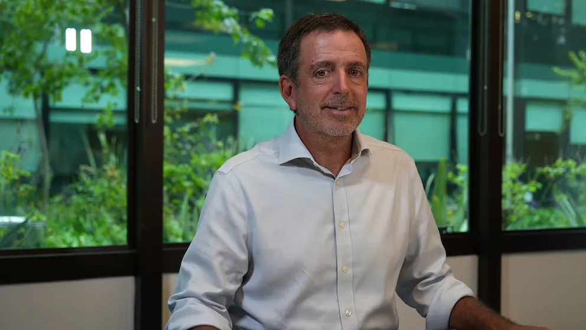
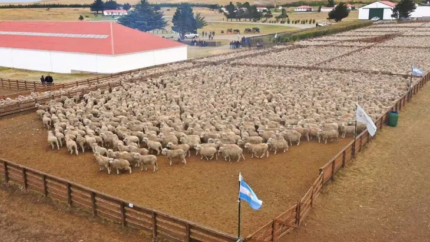
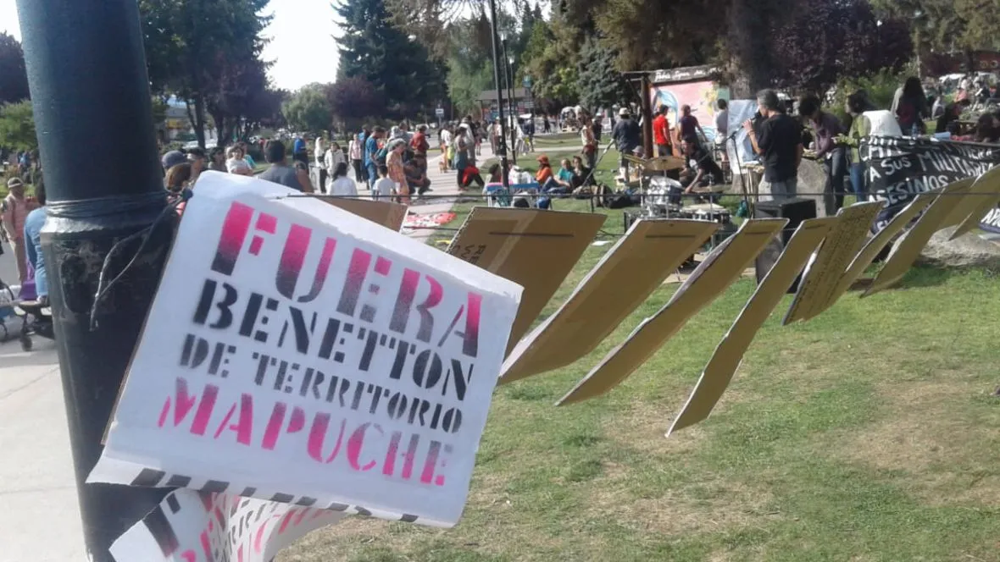
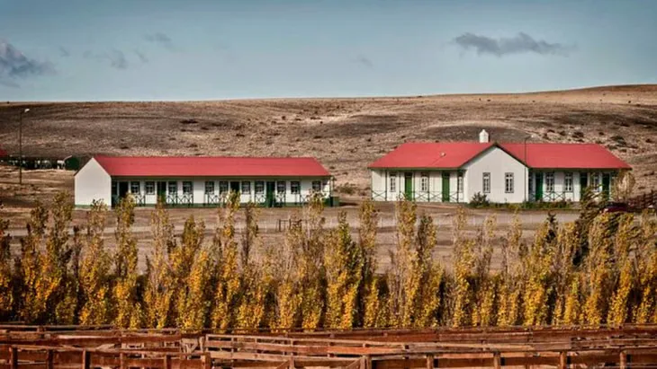

Tras 35 años, Benetton se va de la Patagonia: sus 900.000 hectáreas pasan a manos de directivos de Adecoagro
Mariano Bosch, fundador y CEO de Adecoagro, encabezó la compra de la Compañía de Tierras Sud Argentino y de Ganadera Cóndor a título personal, y no a través de la compañía. La operación cierra 35 años de presencia del holding italiano en el agro argentino y deja las tierras en manos de los socios de Adecoagro, una empresa controlada por Tether.

Después de 35 años, el grupo Benetton concretó su salida definitiva del negocio agropecuario en Argentina. El holding italiano, a través de su sociedad de inversiones Edizione, vendió la totalidad de sus tierras en el país: más de 900.000 hectáreas que pertenecían a la Compañía de Tierras Sud Argentino (CTSA) y a Ganadera Cóndor. Los compradores son los accionistas y directores de Adecoagro, encabezados por su CEO, Mariano Bosch.
Quién compra: Bosch y directivos, a título personal El dato central para entender la operación es que no fue Adecoagro como compañía quien adquirió las tierras. La compra fue realizada por un grupo de accionistas y directores de Adecoagro a título personal, con Mariano Bosch, fundador y CEO de la agroindustria, a la cabeza. La firma que cotiza en la Bolsa de Nueva York no participó como entidad corporativa en la transacción.
Bosch asumirá la presidencia de ambas sociedades adquiridas, mientras que Agustín Dranovsky continuará como CEO de CTSA, lo que garantiza la continuidad operativa de las estancias.

Las dimensiones del imperio territorial Las más de 900.000 hectáreas —una superficie similar a la de Puerto Rico o a la de Chipre, o cincuenta veces la ciudad de Rosario— están distribuidas en cuatro provincias: Santa Cruz (60%), Chubut (33%), Río Negro (5%) y Buenos Aires (2%). CTSA es la firma con mayor cantidad de hectáreas del país.

Su negocio central es la cría de ganado ovino y bovino y la producción de lana, un segmento en el que es la primera del país. En sus campos pastan alrededor de 260.000 cabezas ovinas y unas 22.000 vacunas, con una producción anual cercana al millón de kilos de lana. En la Patagonia, la actividad se concentra en la zona de cordillera entre Esquel y Bariloche. En Balcarce, provincia de Buenos Aires, la empresa se dedica a la agricultura: siembra maíz, trigo, soja y girasol, además de forrajes como avena, vicia y alfalfa.
El paquete productivo se completa con 10.000 hectáreas de plantaciones forestales, principalmente de pinos —un rubro en el que la empresa ingresó en 1992—, y con el frigorífico Faimali, en Río Gallegos, que puede faenar 2.500 corderos diarios.
De capitales ingleses a Benetton: 137 años de historia La historia de estas tierras se remonta a 1889, cuando se fundó en Londres la sociedad The Argentine Southern Land Company Limited, con capitales 100% ingleses. Parte de sus socios originales habían financiado el primer ramal del Ferrocarril Central del Chubut, entre Puerto Madryn y Trelew, y como contraprestación recibieron una franja de terreno que se convirtió en la primera propiedad de la compañía en el país.
En 1975, ante la caída del precio de la lana, sus dueños vendieron gran parte de los activos y el control pasó a un grupo de empresarios locales encabezados por las familias Menéndez-Hume y Ochoa-Paz Repetto. En 1991, Benetton adquirió la totalidad de la firma y de sus tierras, y la incorporó al portafolio de Edizione, el conglomerado familiar italiano.
Durante más de tres décadas, United Colors of Benetton, la marca textil del holding, utilizó la lana producida en la Patagonia argentina como insumo estratégico.
Una polémica de larga data Que un solo grupo extranjero concentrara más de 900.000 hectáreas en la Patagonia fue, durante años, motivo de polémica y de rechazo. La venta reabre ese debate en un momento delicado para la propiedad rural: la Ley de Tierras (26.737) limitaba al 15% la titularidad extranjera de tierras rurales, pero el DNU 70/2023 de Javier Milei dispuso su derogación y la medida quedó atravesada por una disputa judicial. En agosto de 2026, el oficialismo retiró el capítulo de tierras de un proyecto para poder aprobar el resto del paquete; Diputados lo reincorporó con 239 votos y el tema quedó demorado en el Senado. En octubre, la Corte Suprema suspendió de manera provisoria la derogación en una causa ambiental, por lo que las restricciones recuperaron vigencia cautelar mientras se espera una resolución de fondo.

A esa discusión se suma el conflicto con comunidades mapuche. Un juzgado de Lago Puelo hizo lugar a una acción posesoria de Luciano Benetton y ordenó el desalojo de una comunidad mapuche-tehuelche cerca de El Maitén, que desde diciembre de 2019 reclama el Puesto Platero. La Defensoría Pública, que representa a la comunidad, apeló la medida. En 2019, la Justicia había absuelto a integrantes de Pu Lof en Resistencia de Cushamen y reconocido su reclamo como un conflicto de derechos históricos.

Qué es Adecoagro Adecoagro es una de las mayores productoras de alimentos y energías renovables de Sudamérica. La fundó Mariano Bosch, hoy su CEO, y cotiza en la Bolsa de Nueva York. Maneja 210.000 hectáreas agrícolas y tiene plantas industriales en Argentina, Brasil y Uruguay, donde produce azúcar, etanol y energía renovable. Entre sus marcas figura Las Tres Niñas.
Tether, el accionista que llegó en 2025 En abril de 2025, el grupo Tether —emisor de la USDT, la criptomoneda estable de mayor capitalización del mundo— adquirió el 70% de Adecoagro en una operación que superó los USD 615 millones. Antes de esa compra, ya tenía el 19% del capital. En el mercado local, Adecoagro y la Asociación de Cooperativas Argentinas (ACA) adquirieron el 100% de Profertil, la única productora de fertilizantes nitrogenados del país.
Sin embargo, las tierras patagónicas no las compró la empresa: lo hicieron, a título personal, sus socios y directores.